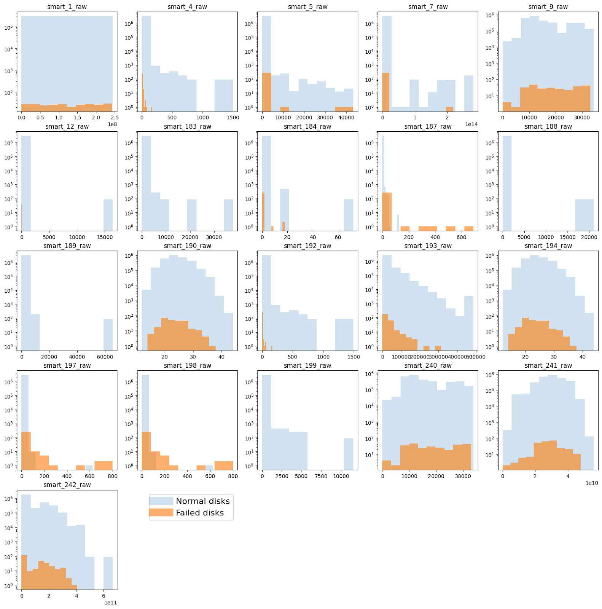
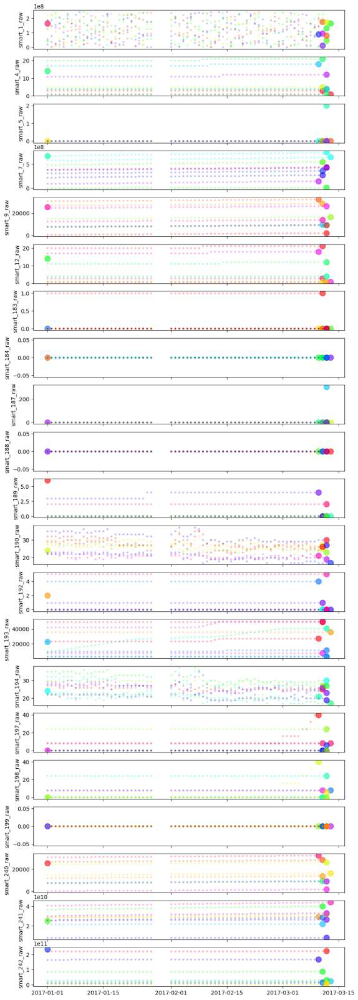
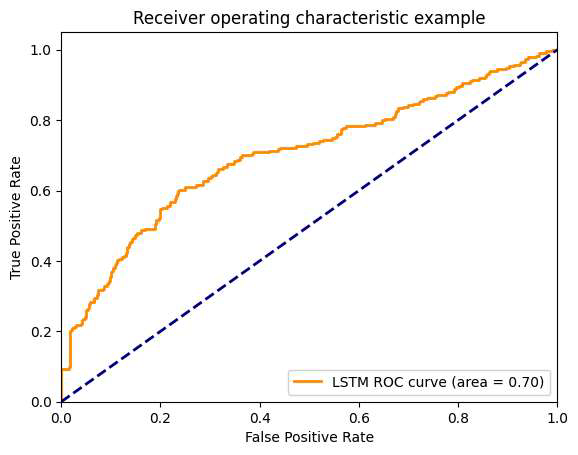
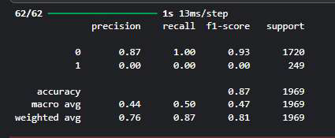
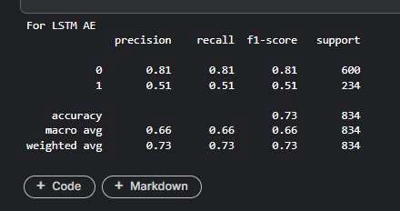
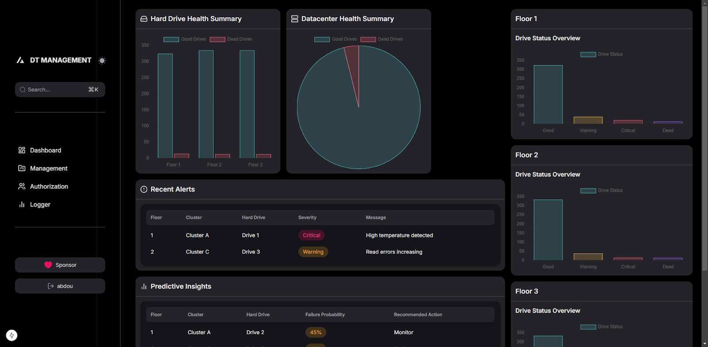
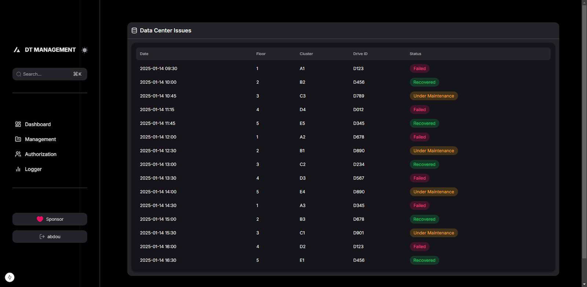
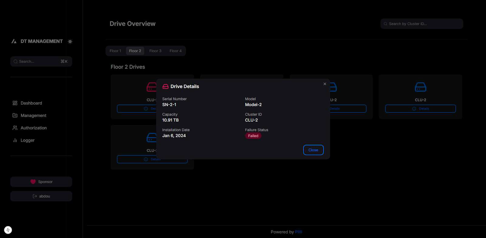

Project Overview
This project aims to predict equipment failures in industrial systems using machine learning. Early failure prediction improves maintenance planning and reduces downtime, enhancing efficiency and cost control.
Key Features
- Exploratory Data Analysis (EDA) to uncover patterns and anomalies in sensor data.
- Supervised models: Random Forest, Gradient Boosting, and deep learning (LSTM).
- Evaluation using accuracy, precision, recall, and confusion matrices.
- Scalable and deployable Python code for real-world industrial data.
My Contribution
As part of the Samsung Innovation Campus program, I dedicated 50+ hours to:
- Data preprocessing using NumPy, Pandas, and Scikit-learn.
- Training and tuning models using TensorFlow (LSTM) and Autoencoders.
- Visualizations with Matplotlib and Seaborn to derive insights.
- Team collaboration to refine solutions in an agile setup.
Challenges Faced
- Dealing with incomplete and noisy sensor data → built a custom cleaning pipeline.
- Model interpretability → used SHAP values for better transparency.
- Balancing precision between normal and failed disks → optimized thresholding.
Model Performance
LSTM Model
- Accuracy: 87%
- Precision & Recall (Normal disks): 87% & 100%
- Precision & Recall (Failed disks): 0% — model overfit to normal class
Autoencoder Model
- Accuracy: 73%
- Precision & Recall (Normal disks): 81%
- Precision & Recall (Failed disks): 51%
Visuals
Sensor Data Histogram

Sensor value distributions for normal and failed hard drives.
Time Series Analysis

Variation of critical sensor readings over time.
ROC Curve (Autoencoder)

Receiver Operating Characteristic curve for anomaly detection.
Confusion Matrices


Visual performance breakdown of both models.
Interactive Dashboard

System health and prediction dashboard for maintenance planning.
Logs and Drive Details

